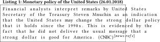

DOI: https://doi.org/10.1145/3184558.3191642
WWW '18: Proceedings of The Web Conference 2018, Lyon,
France, April 2018
Wikipedia is one of the top visited resources on the Web, furthermore, it is used extensively as the main source of information for applications like Web search, question & answering etc. This is mostly attributed to Wikipedia's coverage in terms of topics and real-world entities and the fact that Wikipedia articles are constantly updated with new and emerging facts.
However, only a small fraction of articles are considered to be of good quality. The large majority of articles are incomplete and have other quality issues. A strong quality indicator is the presence of external references from third-party sources (e.g. news sources) as suggested by the verifiability principle in Wikipedia. Even for the existing references in Wikipedia there is an inherent lag in terms of the publication time of cited resources and the time they are cited in Wikipedia articles.
We propose a near real-time suggestion of news references for Wikipedia from a daily news stream. We model daily news into specific events, spanning from a day up to year. Thus, we construct an event-chain from which we determine when the information in an event has converged and consequentially based on a learning-to-rank approach suggest the most authoritative and complete news article to Wikipedia articles involved in a specific event.
We evaluate our news suggestion approach on a set of 41 events extracted from Wikipedia currents event portal, and on new corpus consisting of daily news between the period of 2016-2017 with more than 14 million news articles. We are able to suggest news articles to Wikipedia pages with an overall accuracy of MAP=0.77 and with a minimal lag w.r.t the publication time of the news article.
ACM Reference
Format:
Lijun Lyu and Besnik Fetahu. 2018. Real-time Event-based
News Suggestion for Wikipedia Pages from News Streams. In
WWW '18 Companion: The 2018 Web Conference
Companion, April 23–27, 2018, Lyon,
France. ACM, New York, NY, USA 7 Pages. https://doi.org/10.1145/3184558.3191642
Wikipedia is in the top-5 most visited pages on the Web1. Apart from its direct visitors, Wikipedia implicitly affects millions of users through question answering applications like Apple's Siri, or web search through Google's knowledge graph. Therefore, it is essential that the state of Wikipedia articles is consistent and up to date.
In Wikipedia, the burden of providing and maintaining the information in Wikipedia articles rests on Wikipedia editors, which together with a set of principles and guidelines tries to ensure the quality of articles. Most notably, is the verifiability principle2, which requests that information in Wikipedia articles should be verifiable by means of external references, preferably of third-party sources, with news being the second most cited source [3].
Due to the fact that Wikipedia articles are edited on a voluntarily basis by its editors, often there is a discrepancy on the quality of the Wikipedia articles and their overall demand on the Web [16]. Furthermore, more than 51% of articles are marked as stubs (articles in need for expansion)3. Enriching and extending Wikipedia articles with missing and additional information has been the focus of extensive research [4, 14]. Previous work has considered the enrichment task as a static approach, where for a given Wikipedia snapshot and existing document collections, news or other Web documents are suggested to matching Wikipedia articles and their corresponding sections. Depending on the periodicity of such updates, there is an inherent lag between the publication time of a news article or Web page reporting an important event and the time it is added into its corresponding Wikipedia article.
In this work, we address the deficiencies of snapshot enrichment [4, 14] and propose an approach, which suggests news to Wikipedia articles in an automated manner. First, we analyze and extract events from the daily news stream and furthermore construct an event-chain based on events from previous time-points, with the intuition that events may span from one day up to years. Next, from the constructed event chain, we determine the important Wikipedia entities involved in it, and when the information in an event has converged we use a learning-to-rank (L2R) approach to suggest news articles to the corresponding Wikipedia articles.
In our experimental evaluation, we show that our approach provide guarantees in terms of minimizing the lag, specifically, minimizing the difference between the publication time of a news article and the time it is added into the corresponding Wikipedia article. At the same time, our suggestion based on the L2R approach are accurate with an overall MAP score of MAP=0.77 for a set of 40 events, with daily news ranging between 2016-2017 and with more than 14 million news articles.
To this end, we make the following contributions:
In this section, we review related literature which deals with Wikipedia enrichment and event chaining from news media.
Event Chaining. Event extraction and summarization has been focus of extensive research [2, 11, 13]. An important aspect when dealing with events is their span. Events may span from a single day, and with large-spanning events with years. Thus, constructing an event chain across time is important in order to be able to analyze the complete information from an event. Setty et al. [15] use a clustering approach for constructing an event chain by first clustering news articles on a given day, and then constructing a chain amongst such clusters between consecutive days. We follow a similar approach to [15], however, we use Word-Movers distance [10], which based on our experimental evaluation achieves near optimal clustering accuracy.
Wikipedia Enrichment. Another line of research looks at the problem of Wikipedia enrichment as a static process. An imminent problem with such approaches is that there is a constant lag between information published in external sources like news media, and the time they are added and referenced in Wikipedia. The works in [3, 14] propose approaches that for a given Wikipedia article find relevant and important news or general Web documents for suggestion. However, one crucial challenge in updating Wikipedia in near real-time is to be able to model events and event-chains from external sources like news, and furthermore detect when the information in an event has converged and is ripe for suggestion to the corresponding Wikipedia articles involved in it.
An important part of Wikipedia is articles that refer to real world events. Georgescu et al. [6, 7] propose approaches that leverage the frequency of edits for given articles for event detection in Wikipedia. Specifically, through the added excerpts in the Wikipedia pages they come with a representation of an event. Similarly, Mishra et al. [12] propose to link excerpts from Wikipedia events and link them to online news-archives, and thus, provide evidence for already exciting events in Wikipedia. Similar to the other Wikipedia enrichment works, our contribution and at the same time the diverging point is our ability to monitor events and construct event-chains, which we use in our decision process on when to suggest news articles related to an event for enriching the involved Wikipedia entities, respectively the corresponding articles.
Finally, as we show in Section , there is a discrepancy in the focus of Wikipedia editors and their contributions in contrast to the demands from the general Web users [16]. For some events, information from external sources is reflected within minutes [9], while in other cases such delay can be significant and is dependent on the periodicity of snapshot enrichments [3, 14]. Hence, real-time and continuous approaches that monitor events are necessary for updating Wikipedia and keeping it in a consistent state.
In this section, we introduce the terminology used in this paper, and formally define the problem of real-time news suggestion.
We consider events from Wikipedia's current event portal (WCP) E = {e 1, …, en }. For each event e ∈ E, we distinguish the actors involved in this event, which in our case represent Wikipedia articles, which we refer with a(e) = {a 1, …, an }. Furthermore, each event consists of a textual description, which we refer to with desc(e), a set of references pointing to news sources, that is, n(e) = {n 1, …, nk }, and the event date – date(e) or simply te .
The set of references from events in E are drawn from a daily-news stream N, which is comprised from news articles reported by multiple news domains D(N) = {d 1, …, dn }. Each news article n ∈ N consists of n = ⟨date, title, body⟩, and we will refer to the publication date of a news article with tn . The set of news articles reported at a given time point t we will indicate with Nt .
Finally, with A = {a 1, …, an } we refer to the set of Wikipedia articles. For each article we distinguish between their different revisions and differentiate them by the time they are committed. We will refer to the i-th revision at time t of an article a as $a^i_t$ .
In this work, we tackle the problem of suggesting in real-time news articles from a specific event to Wikipedia articles. We distinguish between two main tasks in this work.
Event Chain. For a given news stream N, consisting of daily articles, and an event of interest e, the task is to first extract news articles n(e) that are relevant to e, and construct an event-chain by monitoring the news articles at time points $t_n \le t_e \le t^{\prime }_n$ . The resulting event-chain will consists of a chronological order of news articles ec = {⟨n 1, …, nk ⟩ t − i , …⟨n 1, …, nk ⟩ t , …⟨n 1, …, nk ⟩ t + i }.
News Suggestions. From the event-chain ec , the task is to monitor the reported information about event e at different time points from news articles and decide when and which articles to suggest, such that they fulfill two key properties based on the verifiability principle in Wikipedia4: (i) the news article is relevant for the event e, and (ii) the information about e is reported by reliable news media D.
In this section, we describe our event-based news suggestion approach. The approach starts with a specific event e which is published at a time te and consists of two main steps: (i) for event e it analyzes a news-stream of daily news, and constructs an event-chain spanning across multiple days, and (ii) from the event-chain it decides when and which news articles to suggest for the Wikipedia articles a(e) involved in e.
The event $e={\textit{``Monetary policy of the United States''}}$ in Listing 1 shows an example of an event from the Wikipedia's Current Event Portal published at a given time te . Furthermore, each event points to a set of news references n(e) and involves directly a set of Wikipedia articles a(e). For the Wikipedia articles involved in e, the information contained in it is a strong candidate for addition into the corresponding articles. However, as it is in many cases, events may span from a single day, weeks, months or even more, years. Therefore, it is of great importance to be able and determine the event chain ec = {⟨n1, …, nk ⟩ t − i , …, ⟨n 1, …, nk ⟩ t + i } such that for an event e we can pick news articles that are most relevant for Wikipedia articles a(e) and most authoritative.

News Retrieval. To establish the event-chain for ec, we first need to find relevant news articles from our news-stream N for event e. We do so by taking an information retrieval approach for generating candidate news articles for e. We query our news-stream index N5 by first constructing a query from the event description desc(e) based on an approach proposed by Henzinger et al. [8]. From a given event collection and their description, the approach ranks the event description terms based on tf-idf weights. Our query for e consists of the top–5 highest ranked keywords from desc(e).
As a query similarity model we use the divergence from randomness [1], and consider several retrieval combinations: (i) query the body of a news article, (ii) query the title of the news article, and (iii) query both the title and body of the news article.
Figure 1 shows the ability to retrieve the news articles n(e) at specific cut-off points in the top–k for the different query settings. We see that by considering the top–500 news articles for constructing the event-chain ec we do nearly get perfect recall for the relevant news articles for e.
At each retrieval step, we restrict our model to retrieve the top–500 news articles that are within a week of the given date ti . In a similar fashion we make our way down in the news-stream, by retrieving one week slices of top–500 articles t i − 1 < ti . To construct the event chain, we start from the event date te , and cluster the news articles based on the Word Mover's distance (WMD) [10]. WMD assigns two news articles in the same cluster based on their distance, which is computed based on the distance of the word embeddings of the individual words in the respective documents.
By clustering news articles at each time slice, we connect clusters from adjacent dates, and thus obtain an event chain ec = {⟨n1, …, nk ⟩ t − i , …, ⟨n 1, …, nk ⟩ t + i } which may span across days, weeks or even years.
One limitation here is that for an event e we expect to have a set of relevant news articles, such that we can perform the event-chaining. However, such a limitation can be addressed by following approaches proposed in Fetahu et al. [5], where the event description can be used to find relevant news articles.
Information in Wikipedia articles is centered around events. As such, events trigger updates in the corresponding Wikipedia articles, and in some cases they account for the actual creation of Wikipedia articles [3].
In this approach, we pose the task of news suggestion for Wikipedia articles a(e) = {a 1, …, an } involved in an event e as a ranking problem. We do this by considering news articles which are part of the event chain ec, where we slice the event-chain in a window of three days. The intuition behind such a slicing is that we want to observe the reporting of news media w.r.t e such that we suggest the most complete information about e and from most authoritative news media. This intuition is based on empirical observation from our experimental setup. Figure 2 shows an example of an event-chain for an example event in our dataset.
We notice that usually the referred news articles for e in the corresponding Wikipedia articles come from the peak of the distribution of news-articles reported in our event-chain ec. This is somewhat intuitive as the information about an event has converged, in the sense, that we are in hold of the complete picture regarding e, and we are able to pick relevant and authoritative news-articles for suggestion.
These observations determine the choice of our features and provide the intuition therein. For the news suggestion approach, we use a learning-to-rank (L2R) approach, where we train a point-wise L2R approach using logistic regression as our model. The features take into account a time window of three days in the event-chain, and they are described below:
News article frequency. In the event-chain, we consider the frequency of news-articles reported about event e, and furthermore we consider the increase w.r.t the adjacent timepoint based on an exponential moving average. This feature captures the popularity of an event amongst the news media D from our news stream N.
Domain diversity. The number of diverse news domains D reporting about e similarly reflects the popularity of event e. The diversity is represented as the ratio of domains reporting about e w.r.t the total number of domains on that particular day.
Domain authority. A crucial factor in suggesting news to Wikipedia articles, is the authority and reliability of news media. We compute a domain prior from the entire Wikipedia collection, thus, favoring news articles coming from more authoritative domains. The intuition here is that even though a news article might be relevant at an earlier time-point, we will favor a news article coming from a later time-point but from a more authoritative domain.
Event Convergence. Here we capture the information gain between adjacent time-points in our event-chain. The intuition here is that for emerging events, where new information becomes available, we decide to wait until such information gain becomes minimal, and thus an indicator that the event has converged in terms of information. For this purpose we compute the Kullback-Leibler divergence between the unigram language models of news articles in a time point ti and t i − 1. However, in our experimental setup this feature did not prove to be useful. We hypothesize that the reason for this is that the set of events in our experimental setup did not have developing stories with emerging information.
In this section, we describe the experimental setup on evaluation our approach for news suggestion for Wikipedia articles.
Events. In this work, we use the Wikipedia's current event portal (WCEP) as our source of events. Events from WCEP are published on a daily basis by Wikipedia editors, where for each event e we have the set of involved entities (or Wikipedia articles) a(e), a textual description desc(e), and external links serving as evidence to the event, specifically the set of news articles n(e).
We handpick a set of 40 events, which involve highly authoritative Wikipedia articles, e.g. Donald Trump, Hillary Clinton etc. From the events, we use the set of Wikipedia articles a(e) as our target articles for suggesting information about a particular event e, specifically the set of news articles providing evidence for e.
From the set of 40 events, we have a set of 58 Wikipedia articles as candidates for news suggestions. The total number of news articles referred by our set of events consists of 6833 news articles.
News-Stream. We operate on a news stream of daily articles in the period between 2014 and 2017. It consists of 22 million news articles, from a set of 4300 news domain. The articles represent a crawl by the Gdelt project6, which indexes news articles across the world that are in English language. Finally, the general news-stream is combined together with news articles referred from our event set. This represents a real-world scenario where we need to find relevant news articles for a particular event from a large collection of news articles.
If we compare the number of news articles in our news-stream against the number of news articles that are already referred by our event set, we see the difficulty of the problem on finding relevant news articles for suggestion.
Wikipedia. From the set of all Wikipedia articles in our set of events, we extract their entire revision history. We search through the revision history of each Wikipedia article and find the first occurrence of an external reference to a news article that is associated with event e. We consider the occurrence of a news article n ∈ n(e) as an indicator that the event information is reflected by the i-th revision of article a7.
The time difference between the publication time of news article tn and the time of revision $a^k_i$ , is what we refer as the lag, which is a measure we optimize for apart from the accuracy of our news suggestions for Wikipedia articles for any given event.
Here we discuss the evaluation strategies we undertake for measuring the accuracy of our event-based news suggestion approach. We describe the process of ground-truth acquisition and the evaluation strategies we undertake.
Wikipedia Ground-Truth.. An automated way of evaluating our event-based news suggestion approach, is to see how well our L2R approach is able to rank in the top–10 ranked set of news articles n(e) for an event e and Wikipedia article a.
This represents a very restrictive ground-truth, since for any event e the choice of news articles vary only by a handful of Wikipedia editors and only few news articles are necessary to cover an event. However, there are two main issues with such a ground-truth: (i) the news article may be from a news domain which is not of optimal authority, and (ii) there may be news articles of earlier publication time $t_{n^{\prime }} \ll t_{n}$ , thus increasing the amount of lag between the actual event date and the addition of the event information into the articles a(e) and (iii) the news articles may not be selected properly by editors when similar events happen repetitively. Therefore, we consider a second ground-truth described next.
Crowdsourced Ground-Truth.. For an event-chain we construct for an event e, we rank a top–10 set of news articles which we deem as suitable for suggestion through our L2R approach to the corresponding Wikipedia article a(e). However, only for a handful of news articles for an event e we have explicit labels through the WCEP as described above. Hence, for the remainder of unlabelled news articles in our top–10 we perform a crowdsourcing evaluation, where we ask crowdworkers to assess the relevance of the top-ranked news articles w.r.t the event e.
For our crowdsourcing evaluation, we pick only workers of highest quality as identified by the CrowdFlower platform8. To the crowdworkers we show the description of the event e, and for each unlabeled news article, we show a corresponding news article that existing in our Wikipedia ground-truth. We randomize the order of news articles such that we do not exhibit any choice bias from the way the news articles are displayed in the crowdsourcing job. For each pair of news articles for an event, we ask a total of three crowdworkers to assess the relevance of both articles w.r.t the event and are provided with the following options: (i) first document is relevant, (ii) second document is relevant, (iii) both documents are relevant, and (iv) none of the documents are relevant. Finally, we pick the label chosen based on majority voting principle. Figure 3 shows a snapshot of our crowdsourcing evaluation setting.
In this case, we collect a total of 6144 judgments for a set of 2048 pairs of event and news article pairs (ground-truth and our top-10 unlabeled news article suggestions).
Since we pose the problem of event-based news suggestion as a ranking problem, we consider standard ranking evaluation metrics. We consider the following metrics.
P@k. Precision at k or P@K assess the accuracy of our L2R model up to a rank k. In our case we limit to a maximum rank where k = 10.
MAP. We further measure the mean average precision across all events in our experimental setup. This show the overall accuracy we achieve for all events. We defined MAP as shown below.
Lag. Since our goal is to suggest news-article in real-time, we want to minimize the amount of lag we introduce between the time a news article is published for an event e and is ripe for suggestion and the time it is added to its corresponding Wikipedia article a. We define lag as following.
In this section, we report and discuss the evaluation results w.r.t the accuracy of our news-suggestions from the L2R approach, and the impact on reducing the lag between the publication time of relevant news article for an event e and until it is added into the corresponding Wikipedia article involved in e.
In the case of Wikipedia, a crucial aspect when considering enrichments is the accuracy. For this task, we need to suggest top–k (where k=10) news articles that are relevant for a specific event e based on the constructed event-chain. Table 1 shows the accuracy as measured based on our ranking evaluation metrics. In the left part of the table we distinguish the original ground-truth WikiGT, which corresponds to the ability on ranking in the top–k news articles n(e) that are already referred by the Wikipedia events and later added to the corresponding Wikipedia articles a(e). While, in the right part of the table, we show the accuracy based on the crowdsourced ground-truth, as described in Section 5.2.
|
WikiGT
|
CrowdGT
|
|||
|---|---|---|---|---|
| rank | P@k | nDCG@k | P@k | nDCG@k |
| 1 | 0.18 | 0.16 | 0.83 | 0.83 |
| 3 | 0.22 | 0.25 | 0.71 | 0.73 |
| 5 | 0.24 | 0.33 | 0.69 | 0.76 |
| 10 | 0.26 | 0.59 | 0.68 | 0.77 |
| MAP |
0.41
|
0.77
|
||
From Table 1 we see that our approach can suggest news-articles with high accuracy, with P@1 = 0.83 and overall MAP = 0.77. However, it is interesting to note that in our crowdsourcing evaluation in a 26.3% of cases our news suggestions were preferred over the existing ones in Wikipedia, whereas in majority of the cases, specifically in 40% the crowdworkers deemed both news-articles as relevant for event e. Table 2 shows a breakdown of the preference of crowdworkers w.r.t the choice of news article for an event.
| both | 820 (40%) |
|---|---|
| ground truth only | 542 (26.4%) |
| our suggestion only | 539 (26.3%) |
| neither | 147 (7.1%) |
| all | 2,048 (100%) |
Apart from the accuracy in suggesting news to Wikipedia articles, an important factor is the speed with which such news are suggested. In our event-based news suggestion, we ensure that an article for an event e is suggested as soon as the main criteria established in Section 3.2 are fulfilled.
Despite the fact that in our event collection, we deal with highly popular events and Wikipedia articles, we are able to suggest significantly faster the news articles to Wikipedia articles in comparison to the time in which they are added by the Wikipedia editors. Figure 4 shows the amount of days we reduce the lag between the publication time of an news article and its suggestion into the Wikipedia article. In the figure we show the impact on considering suggestions at different cut-off points in our top–k ranking of news articles. On average, we are able to reduce the lag by four days (based on the CrowdGT ground-truth).
It is interesting to note that current state of lag overall in Wikipedia. The lag in the case of news looks much more worrying. Figure 5 shows the overall ratio of Wikipedia articles having a specific amount of lag grouped at different granularities across different years in Wikipedia. We see that there is a tendency of the lag being reduced across the years, however, the majority of Wikipedia articles, for news articles published in 2016, have a lag between 3 and 6 months.
In this work, we proposed an event-based news suggestion approach from news-streams for Wikipedia articles. For an event, which in our case was an entry in the Wikipedia currents event portal, we construct an event-chain spanning across many days, we observe and decide to suggest when news articles w.r.t an event fulfill two main criteria as established by Wikipedia policies for suggestion: (i) relevance to a Wikipedia article, and (ii) reported by authoritative news media.
We show that our event-chaining approach is highly accurate, and furthermore through our L2R approach we can suggest with high accuracy news articles relevant for an event e and involved Wikipedia articles a(e), with P@k = 0.82 and MAP = 0.77. Through our accurate suggestion, we can reduce the amount of lag between the publication time of a relevant news article and the time it is added into the corresponding Wikipedia articles. For our set of highly popular events, and popular Wikipedia articles, we reduce the lag on average of four days when compared to the existing state in Wikipedia.
As future work we foresee, the process of automatically distinguishing news articles from a news-stream into separate events, thus, making it unnecessary to provide events of interest, in this case events from Wikipedia's current event portal, which does not have complete coverage of events that are reported in news streams like the one indexed by the GDelt project.
1https://www.alexa.com/topsites
2https://en.wikipedia.org/wiki/Wikipedia:Verifiability
3https://en.wikipedia.org/wiki/Wikipedia:Statistics
4https://en.wikipedia.org/wiki/Wikipedia:Verifiability
5We index the daily-stream of news using Solr.
7While unlikely, there might be erroneous associations where we may mark that information from event e is reflected in an article through a news article n. For our set of 40 events, we do not have such cases.
This paper is published under the Creative Commons Attribution 4.0 International (CC-BY 4.0) license. Authors reserve their rights to disseminate the work on their personal and corporate Web sites with the appropriate attribution.
WWW '18, April 23-27, 2018, Lyon, France
© 2018; IW3C2 (International World Wide Web Conference
Committee), published under Creative Commons CC-BY 4.0
License. ACM ISBN 978-1-4503-5640-4/18/04.
DOI: https://doi.org/10.1145/3184558.3191642